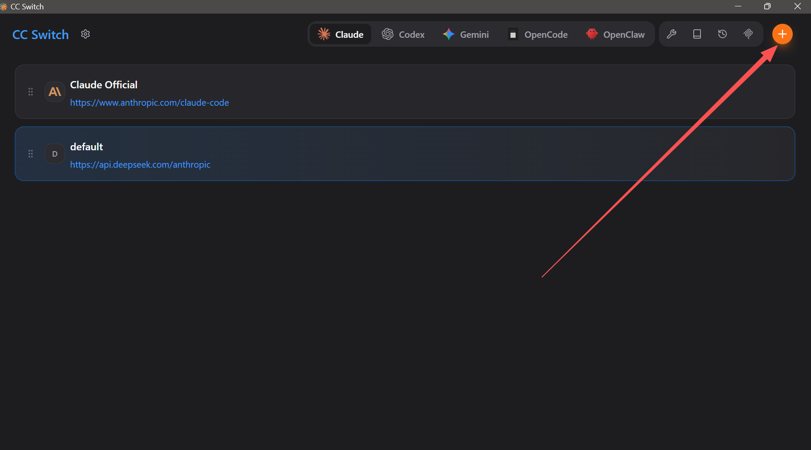
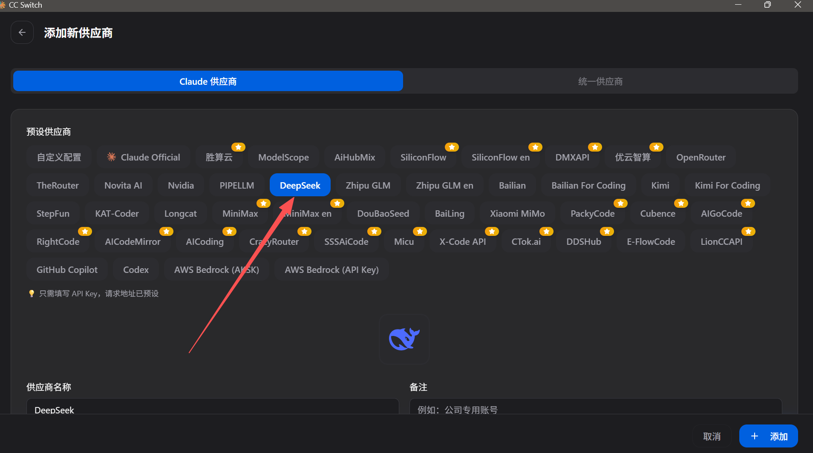
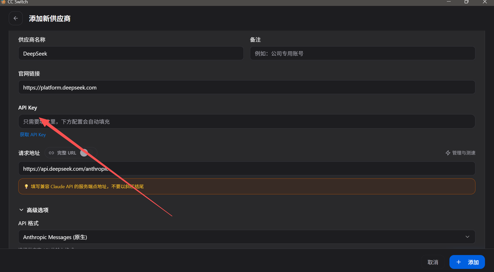
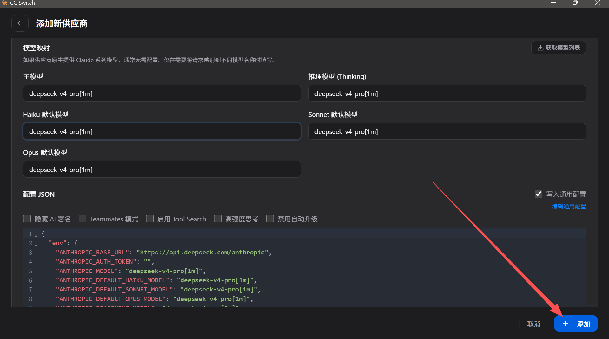
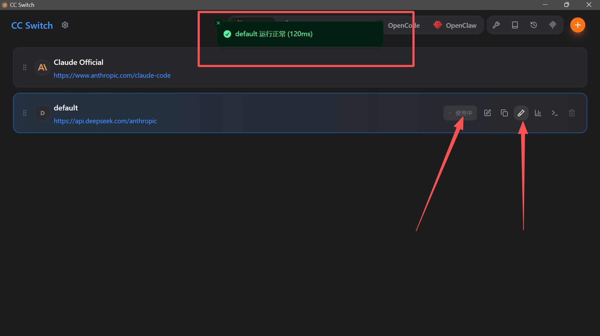
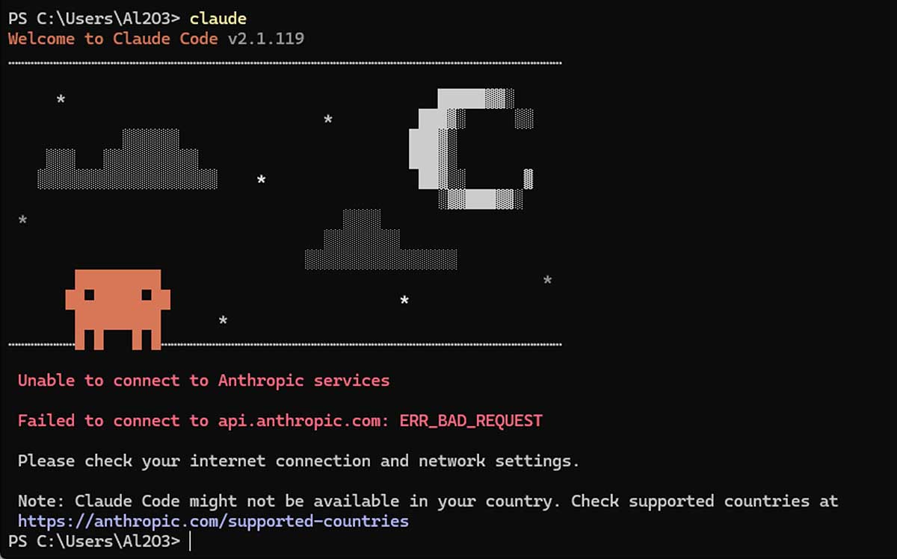

安装 Git Bash（仅 Windows 需要，Mac / Linux 跳过）
Claude Code 原生是为 Linux / macOS 设计的，而 Windows 系统命令不同，所以需要装 Git 来进行一个准备工作。
下载安装包，安装时狂点下一步就行。
安装 Claude Code 本体
打开终端（Windows 用 PowerShell，Mac/Linux 用 Terminal），粘贴命令即可：
irm https://daheiai.com/cc.ps1 | iex
安装 2.1.153 老版本命令：
& ([scriptblock]::Create((irm https://daheiai.com/cc.ps1))) 2.1.153
备用：官方原版命令 irm https://claude.ai/install.ps1 | iex
curl -fsSL https://daheiai.com/cc.sh | sh
安装 2.1.153 老版本命令：
curl -fsSL https://daheiai.com/cc.sh | sh -s -- 2.1.153
备用：官方原版命令 curl -fsSL https://claude.ai/install.sh | sh
因为 2.1.156 版本使用第三方 API 存在兼容性问题，建议回退 153 版本。
整个过程会下载一个 200+MB 的软件，取决于个人的网络状态，时间可能会很长。
⚠️ 重要声明
本页面提供的 Claude Code 安装脚本（cc.ps1 / cc.sh） 用于自动化安装流程。作者不提供代理、中转或文件托管服务。具体的脚本内容已开源，放在 GitHub 上面可公开查看。
- 脚本会获取官方版本信息（
latest/manifest.json），并在本地执行安装。 - 所有二进制文件（claude.exe）均由用户电脑直接从 Anthropic 官方 Google Cloud Storage 存储桶下载。
- 使用前请确认当前网络环境能够正常访问
storage.googleapis.com及相关官方地址。 - 本项目与 Anthropic, Inc.、Google LLC 均无关联、合作或授权关系。
使用本脚本即表示您已阅读并同意：请自行评估网络、系统与数据环境，并遵守所在地法律法规。使用过程中产生的设备、数据、账号或其他结果，由使用者自行承担。
配置环境变量 PATH
把 C:\Users\你的用户名\.local\bin\ 加到用户级 PATH。
点开开始菜单，输入环境变量，点"编辑系统环境变量"。
在窗口下面点"环境变量"，在系统环境变量里找到 Path，双击它。
新建一条，把 C:\Users\你的用户名\.local\bin\ 复制进去。
Mac / Linux 的安装脚本一般会自动配置 PATH。
先试试关掉当前终端，重开一个新的输入 claude。
然后还是找不到命令，手动把以下内容加到你的 shell 配置文件中：
export PATH="$HOME/.local/bin:$PATH"
加到 ~/.bashrc 或 ~/.zshrc，然后执行 source ~/.zshrc 生效。
安装 cc-switch，接入更多模型
软件装好了，但还没有 AI 模型可用。这时候需要 cc-switch，它可以切换不同的 AI 模型提供商。
下载安装：
安装完成后，打开 CC-Switch，按以下步骤配置：
第 1 步：点击右下角 + 号添加渠道
确保 CC-Switch 作用于 Claude Code，然后点 + 添加新渠道。

第 2 步：选择模型提供商
以 DeepSeek 为例，在弹出的窗口中选择对应的供应商。

第 3 步：填入 API Key
在 API Key 输入框中填入你的密钥，下方的请求地址会自动填充。

第 4 步：配置模型映射并添加
在模型映射中填入对应的模型名称（deepseek-v4-pro[1m]），然后点击「+ 添加」按钮。

第 5 步：确认渠道运行正常
添加成功后，确保该渠道处于「使用中」状态，看到绿色运行提示即可。

配置完成后，回到终端输入 claude 就可以直接开始对话了。
安装后仍然报错的一种情况

Claude Code 基础使用
claude。右键文件夹用终端打开最快；如果右键没有，就先打开终端，再用 cd + 文件夹路径 进入工作目录。claude，然后在对话框内输入 /resume，就可以选择曾经在这个工作目录中的各种历史会话，回车即可恢复选中的会话了。/context 来查看当前会话的上下文占用情况。或者你担心自动压缩来得猝不及防，你也可以手动输入 /compact。压缩次数越多，越早期的内容越容易失真。常见问题
官方目前更推荐原生安装方式，本教程采用的也是这种方式。正常卸载方式：打开设置 > 应用 > 已安装的应用，搜索"Claude Code"，点击三个点，然后选择卸载。